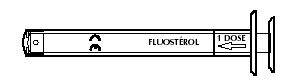
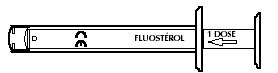
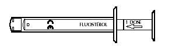

RÉSUMÉ DES CARACTÉRISTIQUES DU PRODUIT
ANSM - Mis à jour le : 26/02/2007
FLUOSTEROL 0,25 mg/800 U.I./dose, solution buvable
2. COMPOSITION QUALITATIVE ET QUANTITATIVE
Fluor ............................................................................................................................................. 0,1000 g
Sous forme de fluorure de sodium .................................................................................................... 0,2212 g
Cholécalciférol (Vitamine D3) ......................................................................................................... 320 000 UI
Sous forme de concentrat de cholécalciférol, forme pulvérulente ......................................................... 0,0080 g
Pour 100 ml.
Pour la liste complète des excipients, voir rubrique 6.1.
Solution buvable.
4.1. Indications thérapeutiques
Chez le nourrisson de 0 à 18 mois, administration de fluor et de vitamine D dans le cadre de la prophylaxie conjointe:
· de la carie dentaire chez les enfants particulièrement exposés à ce risque et lorsque l'apport total en fluor est inférieur à 0,3 mg/j;
· ainsi que des états de carences vitaminiques D, en cas d'utilisation d'un lait supplémenté en vitamine D.
4.2. Posologie et mode d'administration
Nourrisson de 0 à 18 mois:
Une dose (1/4 ml) par jour soit 0,553 mg, de fluorure de sodium ( 0,25 mg fluor ) et 800 UI de Vitamine D3.
Mode d'administration
Voie orale.
Le produit peut être avalé dans un peu d'eau ou de jus de fruit.
Une seringue doseuse facilite la prescription et l'administration orale de Fluostérol.

Pour délivrer une dose de produit (0,25 ml), tirer doucement le piston jusqu'à la butée pour faire coïncider le trait 1 dose avec la butée de la seringue pour administration orale.

Dans le cas de dépassement de la butée, le piston n'aspire plus le produit, évitant ainsi un surdosage.

Après utilisation, rincer à l'eau claire et essuyer la seringue pour administration orale, ne pas la stériliser.
· Hypersensibilité connue à l'un des constituants,
· Hypercalcémie, hypercalciurie, lithiase calcique,
· En cas d'occlusion intestinale, en raison de la présence d'huile de ricin,
· Dans les régions où la teneur en fluor dans l'eau de distribution est supérieure à 0,3 mg/l. En France, 85% de la population vit dans des régions où la teneur en fluor est inférieure ou égale à 0,3 mg/l. En cas de doute, il est conseillé de s'enquérir auprès de la mairie ou de la DDASS du taux local de fluor dans l'eau de distribution.
4.4. Mises en garde spéciales et précautions d'emploi
La supplémentation fluorée médicamenteuse est systématique chez le nourrisson, en l'absence d'autres sources d'apport extérieur en fluor représentées à cet âge par les eaux de boisson.
Elle doit ensuite être adaptée à l'âge et aux autres sources potentielles: sel fluoré, eaux de distribution ou minérales, dentifrices fluorés.
La supplémentation fluorée ne dispense pas d'une bonne hygiène bucco-dentaire et alimentaire: limitation des sucres, tout particulièrement sous forme de grignotages et de boissons sucrées entre les repas, éducation précoce du brossage des dents après chaque repas avec un dentifrice fluoré adapté à l'âge, consultation régulière chez le dentiste.
L'apport non contrôlé de fluor pendant plusieurs mois ou années peut être à l'origine d'une fluorose. Afin d'éviter les cumuls, il est indispensable d'établir un bilan personnalisé des apports en fluor (eaux de distribution et minérales, sel fluoré, médicaments sous forme de comprimés, de gouttes, de gommes à mâcher ou de dentifrices fluorés) avant toute prescription fluorée.
Il convient de prendre en compte avec précision la teneur en fluor des eaux embouteillées.
Les eaux minéralisées qui comportent un taux de fluor supérieur à 0,3 mg/l ne doivent pas être utilisées pour la préparation des biberons, en association à une supplémentation fluorée.
Pour éviter tout surdosage, tenir compte des doses totales de vitamine D en cas d'association de plusieurs traitements contenant déjà cette vitamine.
En cas d'apport en calcium, un contrôle régulier de la calciurie est indispensable.
En raison de la présence d'huile de ricin, risque de sensibilisation, notamment chez l'enfant de moins de 3 ans.
En raison de la présence de maltitol, ce médicament est contre-indiqué en cas d'intolérance au fructose.
4.5. Interactions avec d'autres médicaments et autres formes d'interactions
Certains minéraux tels que le calcium, le magnésium ou le fer peuvent chélater les ions fluor et diminuer leur absorption.
L'ingestion simultanée de lait ou de produit laitier, de même que d'antiacides à base de sels de magnésium ou d'aluminium doit être évitée.
Sans objet.
4.7. Effets sur l'aptitude à conduire des véhicules et à utiliser des machines
Sans objet.
En raison de la présence d'huile de ricin, troubles digestifs (nausées, vomissements, douleurs abdominales).
Surdosage dû au fluor
· Intoxication aiguë:
Chez l'adulte ou l'enfant, la dose toxique est de 5 mg de fluor/kg (dose minimale pouvant induire les symptômes d'intoxication).
Elle se manifeste par des troubles digestifs: vomissements, diarrhée, douleurs abdominales et peut mener exceptionnellement au décès.
Lors d'ingestion importante accidentelle, le traitement immédiat consiste en lavage d'estomac ou vomissements provoqués, ingestion de calcium (importante quantité de lait) et surveillance médicale de plusieurs heures.
· Intoxication chronique: la fluorose
Aspect tacheté ou moucheté de l'émail dentaire pouvant apparaître à partir d'une absorption quotidienne d'une dose de fluor supérieure à 1,5mg/j (0,10 mg de fluor/kg/j chez l'enfant jusqu'à 6 ans), pendant plusieurs mois ou années selon l'importance du surdosage. Elle s'accompagne d'une fragilité de l'émail dans les formes sévères.
La fluorose osseuse ne s'observe qu'avec de fortes absorptions chroniques (supérieures à 8 mg/j).
Surdosage dû à la vitamine D
Signes cliniques:
· céphalées, asthénie, anorexie, amaigrissement, arrêt de croissance,
· nausées, vomissements,
· polyurie, polydipsie, déshydratation,
· hypertension artérielle,
· lithiase calcique, calcifications tissulaires, en particulier rénales et vasculaires,
· insuffisance rénale.
Signes biologiques:
· hypercalcémie, hypercalciurie, hyperphosphatémie, hyperphosphaturie.
Conduite à tenir:
Cesser l'administration de vitamine D, réduire les apports calciques, augmenter la diurèse, boissons abondantes.
5. PROPRIETES PHARMACOLOGIQUES
5.1. Propriétés pharmacodynamiques
AUTRES SUPPLEMENTS MINERAUX, Code ATC: A12CD51.
(A: Appareil digestif et métabolisme).
Les fluorures jouent un rôle essentiel dans la prévention des caries dentaires.
Ils exercent un effet systémique pendant la période de minéralisation des dents, complété d'un effet topique après l'éruption dentaire.
Ces deux voies sont interdépendantes et complémentaires. En effet, lors de l'ingestion d'un produit fluoré, le fluor est en contact avec les surfaces dentaires au cours de son passage dans la cavité buccale, exerçant ainsi une action topique.
A l'inverse, le fluor topique peut être partiellement ingéré et s'intègre alors à la voie systémique.
Les effets du fluor sont de trois types:
· un effet bactéricide sur les germes de la plaque dentaire. Les conséquences sont une inhibition de la prolifération bactérienne de la plaque dentaire et une inhibition de la formation des acides cariogènes,
· une diminution du seuil de la solubilité de l'émail en milieu acide,
· une reminéralisation des lésions carieuses initiales de l'émail.
(Le fluor ne saurait toutefois suffire à l'élimination de la plaque bactérienne ou au traitement des caries).
Le rôle essentiel de la vitamine D s'exerce sur l'intestin dont elle augmente la capacité à absorber le calcium et les phosphates et sur le squelette, dont elle favorise la minéralisation (grâce à ses actions directes sur l'os en formation et à ses actions indirectes impliquant l'intestin, les parathyroïdes et l'os déjà minéralisé).
5.2. Propriétés pharmacocinétiques
Les fluorures sont bien absorbés au niveau gastro-intestinal.
Le pic de concentration est obtenu entre 30 minutes et une heure après la prise. Les ions fluorures se concentrent dans les tissus durs de l'organisme: dents et os. Ils sont éliminés par voie urinaire.
La vitamine D est absorbée dans l'intestin grêle de façon passive, puis rejoint la circulation générale par voie lymphatique, incorporée aux chylomicrons.
Après absorption, elle se lie à une protéine porteuse spécifique et est transportée jusqu'au foie pour y être convertie en 25-hydroxyvitamine D.
Cette dernière se lie à son tour à la même protéine porteuse et est transportée jusqu'aux reins où elle est transformée en sa forme active, la 1,25-dihydroxyvitamine D.
Ses sites de stockage essentiels sont le tissu adipeux, les muscles, mais aussi le sang. La 25-hydroxyvitamine D liée à sa protéine porteuse est la forme majeure de réserve circulante de la vitamine D. Sa demi-vie dans le sang est de 15 à 40 jours.
L'élimination de la vitamine D et de ses métabolites se fait par voie fécale, sous forme non transformée ou sous forme hydrosoluble (acide calcitroïque, dérivés glycuroconjugués ).
5.3. Données de sécurité préclinique
Sans objet.
Alpha-tocophérol (COVIOX T 70), parahydroxybenzoate de propyle sodique, parahydroxybenzoate de méthyle sodique, arôme fruits rouges (butyrate d'éthyle, isovalérate d'éthyle, butyrate d'isoamyle, propylèneglycol, bêta ionone, maltol, gamma undécalactone, vanilline, benzoate de benzyle, oxyphénylon), saccharine sodique, huile de ricin hydrogénée polyoxyéthylénée (CREMOPHOR RH 40), maltitol liquide, eau purifiée, phosphate disodique dodécahydraté, acide citrique anhydre.
Sans objet.
2 ans
6.4. Précautions particulières de conservation
A conserver à une température ne dépassant pas + 25°C.
6.5. Nature et contenu de l'emballage extérieur
22,5 ml en flacon (PE) avec seringue pour administration orale (PE/Polystyrène).
6.6. Précautions particulières d’élimination et de manipulation
Pas d'exigences particulières
7. TITULAIRE DE L’AUTORISATION DE MISE SUR LE MARCHE
Laboratoires CRINEX
3, rue de Gentilly
BP 337
92541 Montrouge Cedex
8. NUMERO(S) D’AUTORISATION DE MISE SUR LE MARCHE
· 357 184-9: 22,5 ml en flacon (PE) avec seringue pour administration orale (PE/Polystyrène).
9. DATE DE PREMIERE AUTORISATION/DE RENOUVELLEMENT DE L’AUTORISATION
[à compléter par le titulaire]
10. DATE DE MISE A JOUR DU TEXTE
[à compléter par le titulaire]
Sans objet.
12. INSTRUCTIONS POUR LA PREPARATION DES RADIOPHARMACEUTIQUES
Sans objet.
Médicament non soumis à prescription médicale.